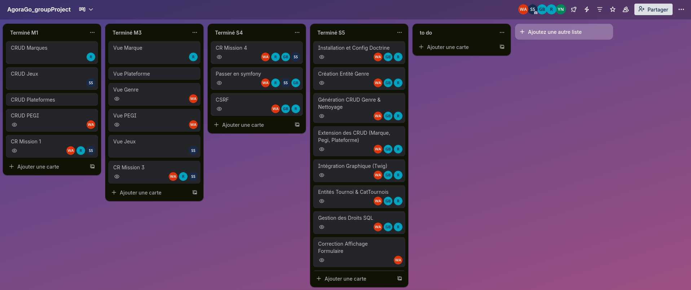
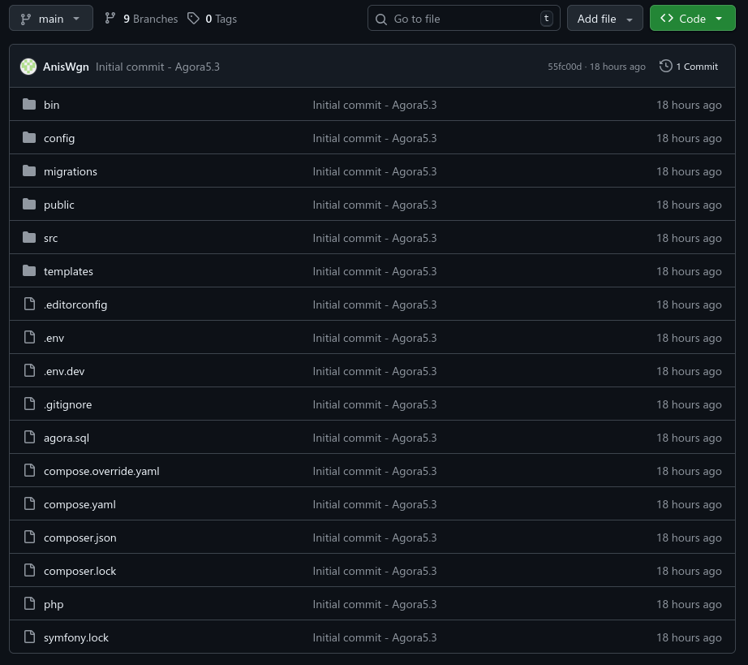
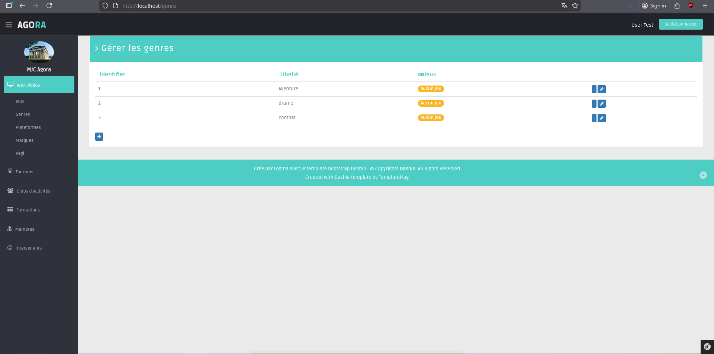
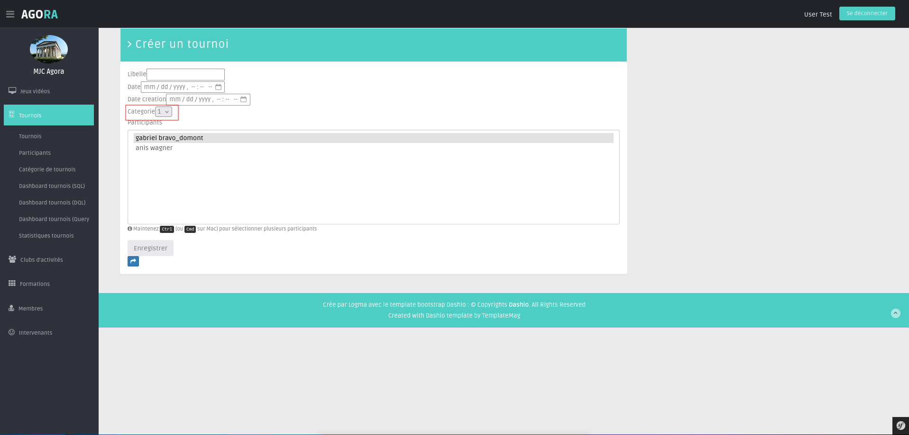
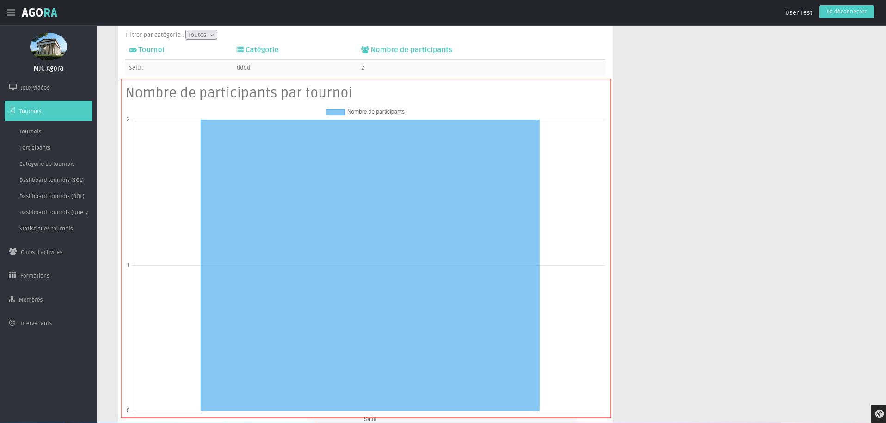

Compte Rendu d'Activité - Sprint 5
- URL du projet : http://ipDeLaVM/agora/public/
- Login Admin :
admin - Mot de passe :
admin
• Mucanji Rajdi
• Bravo Gabriel
• Wagner Anis
• sael
Classe : BTS SIO 2 (SLAM)
1. Contexte et Composant Doctrine
L'application Agora gère les activités d'une MJC. L'objectif de ce sprint était d'abandonner les requêtes SQL manuelles pour passer à l'ORM Doctrine. Ce composant permet de manipuler la base de données via des objets PHP (Entités), ce qui sécurise les échanges et facilite la gestion des relations complexes.
Doctrine est un ORM (Object-Relational Mapping) qui fait le pont entre le monde objet (PHP) et le monde relationnel (SQL). Il permet de définir des entités comme des classes PHP avec des attributs (PHP 8) qui décrivent la structure de la base de données. Doctrine génère ensuite automatiquement les requêtes SQL nécessaires.
1.1. Entités créées
Nous avons modélisé le domaine avec les entités suivantes :
- Genre : Gestion des genres de jeux vidéo
- Tournoi : Gestion des tournois organisés par la MJC
- CatTournois : Catégories de tournois (ex: Compétitif, Amateur)
- Participant : Participants aux tournois
- Marque : Marques de jeux vidéo
- JeuVideo : Catalogue des jeux vidéo
- Pegi : Classification PEGI des jeux
- Plateforme : Plateformes de jeux (PC, PlayStation, etc.)
- Membre : Membres de la MJC (authentification)
1.2. Migrations Doctrine
Les migrations Doctrine permettent de versionner le schéma de la base de données. Chaque modification d'entité génère une migration via la commande php bin/console make:migration. L'exécution se fait avec php bin/console doctrine:migrations:migrate.
Nous avons créé plusieurs migrations pour :
- Création des tables de base (Genre, Marque, JeuVideo, etc.)
- Ajout des relations entre entités (clés étrangères)
- Création de la table de jointure
tournoi_participantpour la relation ManyToMany
2. Démarche Projet (Équipe de 4)
Notre équipe de 4 développeurs a travaillé en méthode Agile Scrum. Nous avons utilisé Trello pour suivre l'avancement des tickets (Backlog, In Progress, Done). La répartition des tâches s'est faite par fonctionnalités :

- Mise en place de l'environnement et des entités de base (Genre, Marque).
- Développement des relations complexes (Tournois/Participants).
- Création du Dashboard statistique.
Pour la collaboration technique, nous avons utilisé Git. Chaque fonctionnalité a été développée sur une branche dédiée avant d'être fusionnée, ce qui nous a permis de résoudre les conflits sur les fichiers de migration Doctrine.

3. Réalisation des Missions
Mission 1 : Mise en place de l'ORM et CRUD (Genre)
Nous avons configuré la connexion BDD dans le fichier .env avec la variable DATABASE_URL. Ensuite, nous avons créé l'entité Genre via la commande php bin/console make:entity Genre. Cette commande interactive nous a permis de définir les propriétés : id (auto-généré), libGenre (string).
L'entité Genre a été générée avec les attributs Doctrine :
#[ORM\Entity(repositoryClass: GenreRepository::class)]
class Genre
{
#[ORM\Id]
#[ORM\GeneratedValue]
#[ORM\Column]
private ?int $id = null;
#[ORM\Column(length: 255)]
private ?string $libGenre = null;
// Relation OneToMany avec JeuVideo
#[ORM\OneToMany(targetEntity: JeuVideo::class, mappedBy: 'genre')]
private Collection $jeuVideos;
}
Nous avons ensuite généré le CRUD (Create, Read, Update, Delete) automatiquement avec php bin/console make:crud Genre. Cette commande a créé :
- Le contrôleur
GenreControlleravec les actions index, new, show, edit, delete - Le formulaire
GenreTypepour la création/édition - Les vues Twig (index, new, show, edit) que nous avons adaptées à la charte graphique
Enfin, nous avons généré et exécuté la migration avec php bin/console make:migration puis php bin/console doctrine:migrations:migrate pour créer la table genre dans la base de données.

Mission 2 : Gestion des Tournois (Relation Many-To-One)
Nous avons créé l'entité Tournoi avec les propriétés : libelle, date, dateCreation. Cette entité est liée à CatTournois par une relation ManyToOne : un tournoi appartient à une catégorie, mais une catégorie peut contenir plusieurs tournois.
La relation est définie dans l'entité Tournoi :
// src/Entity/Tournoi.php #[ORM\ManyToOne(inversedBy: 'tournois')] private ?CatTournois $categorie = null;
Et la relation inverse dans CatTournois :
// src/Entity/CatTournois.php #[ORM\OneToMany(targetEntity: Tournoi::class, mappedBy: 'categorie')] private Collection $tournois;
Problème rencontré : Lors de l'affichage du formulaire avec un champ EntityType pour sélectionner la catégorie, nous avons rencontré l'erreur "Object could not be converted to string".
Solution : Nous avons ajouté la méthode magique __toString() dans l'entité CatTournois pour que Symfony puisse afficher le libellé dans la liste déroulante :
// src/Entity/CatTournois.php
public function __toString(): string {
return $this->libelle;
}
Nous avons aussi dû accorder les droits REFERENCES à l'utilisateur SQL pour permettre la création de clés étrangères :
GRANT REFERENCES ON agora.* TO 'user'@'localhost';

Mission 3 : Gestion des Participants (Relation Many-To-Many)
Pour gérer les inscriptions, nous avons établi une relation ManyToMany entre Tournoi et Participant. Un participant peut s'inscrire à plusieurs tournois, et un tournoi peut avoir plusieurs participants. Doctrine génère automatiquement une table de jointure tournoi_participant lors de la migration.
La relation est définie dans l'entité Tournoi :
// src/Entity/Tournoi.php #[ORM\ManyToMany(targetEntity: Participant::class, inversedBy: 'tournois')] private Collection $participants;
Et la relation inverse dans Participant :
// src/Entity/Participant.php #[ORM\ManyToMany(targetEntity: Tournoi::class, mappedBy: 'participants')] private Collection $tournois;
Dans le formulaire TournoiType.php, nous avons configuré le champ EntityType avec l'option 'multiple' => true pour permettre la sélection multiple de participants :
// src/Form/TournoiType.php
$builder->add('participants', EntityType::class, [
'class' => Participant::class,
'choice_label' => function(Participant $participant) {
return $participant->getPrenom() . ' ' . $participant->getNom();
},
'multiple' => true, // Active la sélection multiple pour ManyToMany
'expanded' => false, // Liste déroulante (true = checkboxes)
'required' => false,
]);
Lors de la sauvegarde, Doctrine gère automatiquement les insertions/suppressions dans la table de jointure tournoi_participant.

Mission 4 : Dashboard et Statistiques (QueryBuilder)
Pour le tableau de bord, nous avons utilisé le QueryBuilder de Doctrine. Contrairement au SQL brut, le QueryBuilder permet d'écrire des requêtes orientées objet dynamiques et sécurisées (protection contre les injections SQL via les paramètres).
Nous avons créé une méthode personnalisée dans le repository TournoiRepository pour filtrer les tournois après une date donnée :
// src/Repository/TournoiRepository.php
public function findAllAfterThanDateQB($datemax): array
{
$qb = $this->createQueryBuilder('t');
$qb->leftJoin('t.categorie', 'c')
->addSelect('c') // Évite le problème N+1
->where($qb->expr()->gt('t.date', ':datemax'))
->setParameter('datemax', $datemax)
->orderBy('t.date', 'ASC');
return $qb->getQuery()->getResult();
}
Cette méthode utilise le QueryBuilder pour :
- Faire une jointure avec la catégorie (
leftJoin) - Éviter le problème N+1 en sélectionnant la catégorie (
addSelect) - Filtrer les tournois après une date (
whereavec paramètre sécurisé) - Trier par date croissante (
orderBy)
Dans le contrôleur, nous utilisons cette méthode pour afficher les statistiques :
// src/Controller/TournoisQBStatController.php
$datemax = $request->query->get('datemax', '2025-01-01');
$tournois = $tournoiRepository->findAllAfterThanDateQB($datemax);
// Transformation en tableau pour la vue
$stats = [];
foreach ($tournois as $t) {
$stats[] = [
'libelle' => $t->getLibelle(),
'categorie' => $t->getCategorie() ? $t->getCategorie()->getLibelle() : '(Aucune)',
'date' => $t->getDate()->format('d/m/Y H:i'),
'nbParticipants' => $t->getParticipants()->count(),
];
}
Enfin, nous avons intégré la librairie Chart.js pour visualiser graphiquement le nombre de participants par tournoi. Les données sont passées depuis le contrôleur vers la vue Twig qui génère le graphique JavaScript.

4. Bilan et Difficultés Rencontrées
4.1. Points Positifs
- Doctrine simplifie grandement la gestion des relations complexes (ManyToOne, ManyToMany)
- Les migrations permettent de versionner le schéma de la base de données
- Le QueryBuilder offre une sécurité accrue contre les injections SQL
- La génération automatique de CRUD accélère le développement
4.2. Difficultés et Solutions
- Erreur "Object could not be converted to string" : Résolu en ajoutant
__toString()dans les entités - Droits SQL insuffisants : Ajout des droits
REFERENCESpour les clés étrangères - Problème N+1 : Résolu en utilisant
addSelect()dans les jointures - Conflits de migrations : Gérés via Git avec des branches dédiées
4.3. Technologies Utilisées
- Symfony 6/7 : Framework PHP
- Doctrine ORM : Gestion de la persistance
- Twig : Moteur de templates
- Chart.js : Visualisation graphique
- MySQL/MariaDB : Base de données